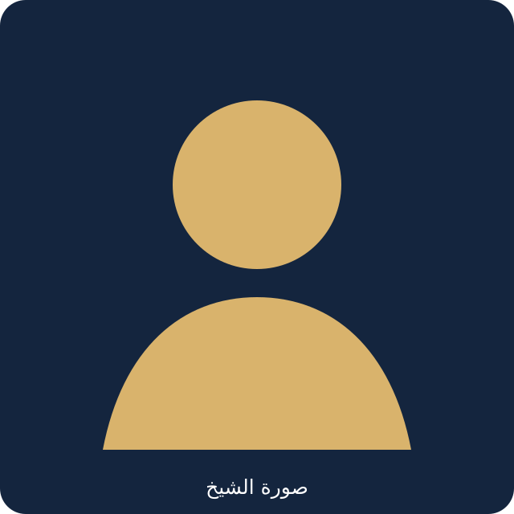

حول الشيخ محمد أحمد الهادي الكرار

نبذة عن الشيخ
الشيخ محمد أحمد الهادي الكرار من أهل العلم والدعوة، ويُعنى بتقديم المعرفة الشرعية والعلمية بأسلوب واضح وميسّر.
تجمع هذه المكتبة الصوتية والمكتوبة دروسه ومحاضراته ومواده العلمية، لتكون مرجعًا منظّمًا يسهل الوصول إليه والاستفادة منه.
نسأل الله أن ينفع بهذا العمل، وأن يجزي الشيخ خير الجزاء على ما يقدمه من علم نافع.